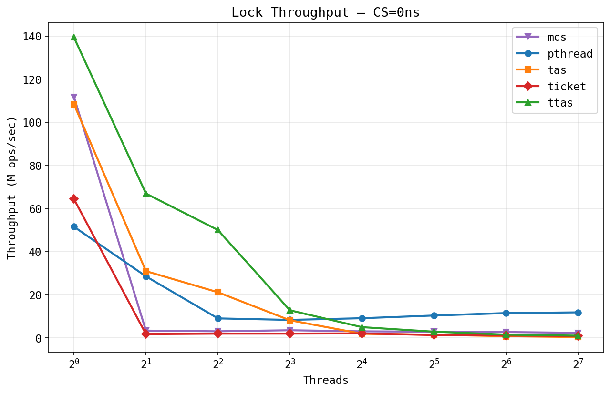
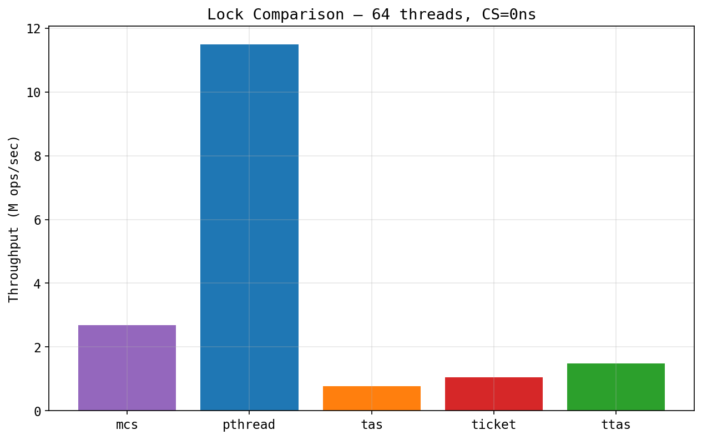
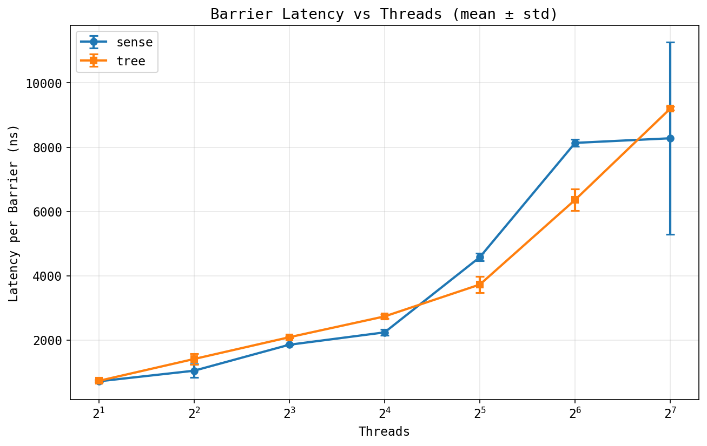
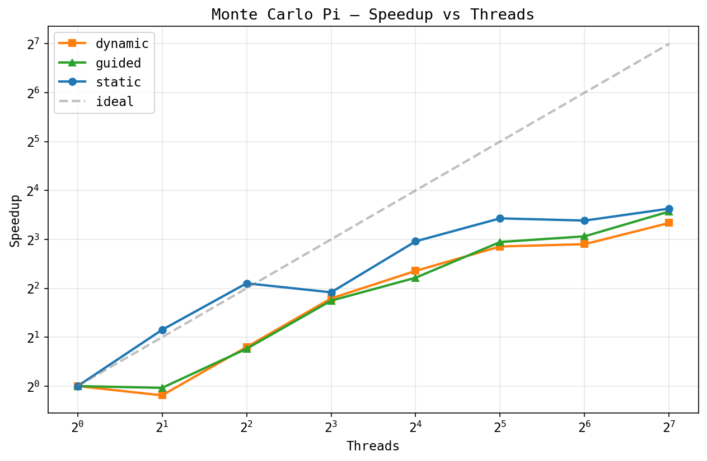
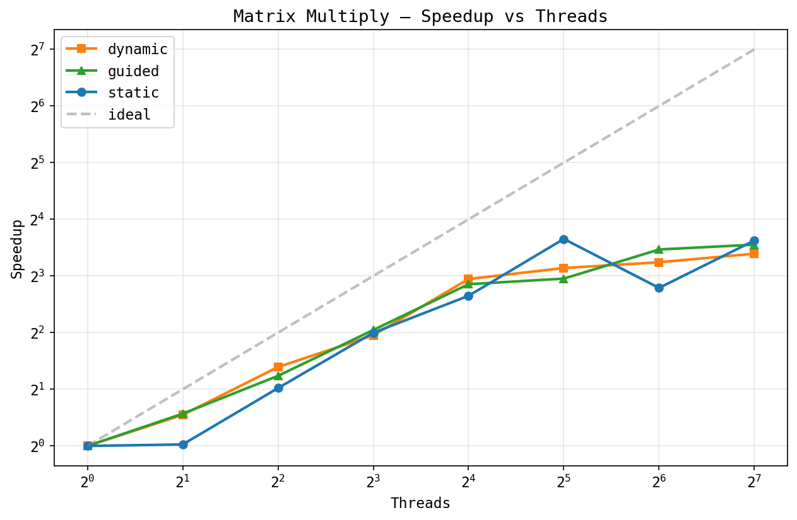
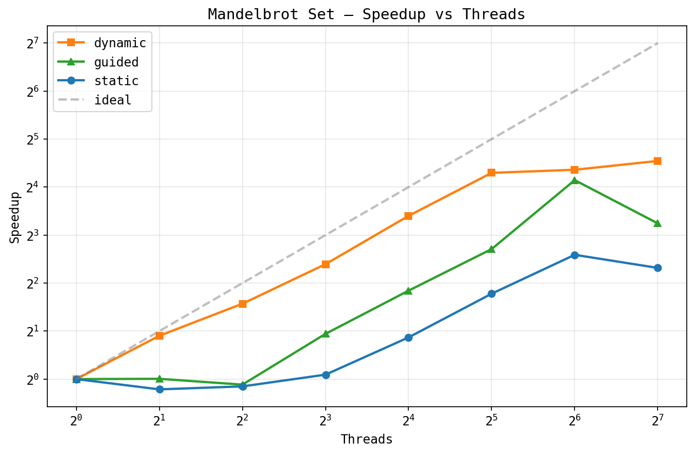

omp0 - a minimal OpenMP implementation
Here's a taste of what omp0 code looks like:
#include <omp0/runtime/runtime.hpp>
#include <cstdio>
int main() {
omp0::RuntimeConfig cfg;
cfg.num_threads = 4;
cfg.lock = omp0::LockKind::MCS;
cfg.barrier = omp0::BarrierKind::Tree;
cfg.sched = omp0::SchedKind::Dynamic;
omp0::Runtime rt(cfg);
int sum = 0;
// parallel_for with dynamic scheduling
rt.parallel_for(0, 100, [&](int i, int tid) {
int local = expensive_work(i);
// critical section protected by MCS lock
rt.critical([&]() { sum += local; });
});
// implicit tree barrier here
printf("sum = %d\n", sum);
}
One config struct controls everything: swap MCS for
TTAS or Tree for Sense and rerun,
no recompilation needed.
We have a working runtime library with most of the core primitives implemented, tested, and benchmarked. The codebase is ~2,500 lines of C++20 across 30+ files with a clean CMake build system. All 54 unit tests pass covering correctness of every component built so far.
Synchronization primitives: Five mutex implementations (pthread_mutex, TAS, TTAS, ticket lock, MCS lock) and two barrier implementations (centralized sense-reversing, tree barrier). All share abstract base classes so the runtime can swap them at construction time.
Scheduling: Two loop schedulers: static (block partitioning) and dynamic (shared atomic counter with configurable chunk size).
Runtime: A persistent thread pool with mutex+condvar
sleep/wake. The Runtime class exposes parallel(),
parallel_for(), and critical(). Implementation
choices (lock kind, barrier kind, scheduler kind) are selected via a
RuntimeConfig struct and factory methods, so no recompilation
needed to swap algorithms.
Benchmarking infrastructure: A benchmark harness that
sweeps all lock/barrier/scheduler variants across thread counts
[1, 2, 4, 8, ..., 128] with multiple samples, outputting CSV. Three
application benchmarks: Monte Carlo Pi estimation, dense matrix multiply,
and Mandelbrot set rendering. A Python plotting script generates 19 graphs
from the CSV data. Hardware performance counter integration (via
perf_event_open) is implemented and will produce 5 additional
cache/MESI analysis graphs when run with the right permissions.
All results below were collected on a 128-core machine. Each data point is the median of 3 samples; barrier plots show mean +/- standard deviation.
Benchmarking synchronization primitives is harder than it looks. A few things caught us off guard:
Measuring the right thing: Our first Pi benchmark showed
negative scaling. Turned out we were scaling total work with
thread count (each thread did samples_per_thread iterations,
so total work was P * samples_per_thread). We were measuring
how long increasing amounts of work took, not how fast a fixed amount of
work got parallelized. Looked totally reasonable until we thought about it.
Confounding variables: Lock throughput depends on NUMA topology, cache line placement, OS scheduling, whether cores share an L2, etc. At 128 threads, where the OS places your threads matters more than which lock algorithm you picked. We don't pin threads to cores yet, so all our measurements have cross-socket noise baked in.
Variance as signal: The barrier latency graph shows big error bars for the sense barrier at 128 threads but tight ones for the tree barrier. That's actually interesting on its own: the centralized barrier's latency depends on which thread shows up last and how far away it is in the cache hierarchy. We want to capture per-barrier latency histograms within a single run eventually, not just variance across runs.
Lock throughput (zero critical section):

At zero critical section length, TTAS and MCS lead at low thread counts (~140M and ~110M ops/sec at 1 thread) since single-threaded acquire is just an uncontended atomic. As threads increase, all spinlocks collapse: TTAS drops from 140M to under 2M at 128 threads from cache line bouncing across sockets. The weird part is that pthread_mutex dominates at high contention (~12M ops/sec at 128 threads vs. ~2.7M for MCS, the best spinlock). We want to figure out exactly why, since it's not obvious why a kernel mutex should be this much faster.
Lock comparison at 64 threads:

The bar chart makes it clearer: pthread gets 4x higher throughput than MCS, and 14x higher than TAS at 64 threads. Not sure yet whether it's futex behavior, reduced coherence traffic, or something else. We plan to look at this with perf counters.
Barrier latency:

Both barriers scale roughly linearly from ~800ns at 2 threads to ~8-9us at
128 threads. Tree is a bit faster at 32-64 threads, probably less
contention on the arrive counter. The more interesting thing is the
error bars: sense has way higher variance at 128 threads
(+/-3us) while tree is much tighter (+/-500ns). When 128 threads compete on a
single fetch_add, the last thread's latency depends on where
it sits in the cache directory, which changes run-to-run.
Monte Carlo Pi, speedup:

Pi is embarrassingly parallel (no shared state during computation). Static
scheduling gets ~10x at 128 threads, while dynamic plateaus around ~7-8x.
Kind of unexpected for a workload with zero load imbalance: the
fetch_add in the dynamic scheduler's shared counter becomes
a bottleneck at 128 threads, even with chunk size 1024.
Matrix multiply, speedup:

Dense matrix multiply (256x256) has some weird non-monotonic behavior. Both schedulers hit ~8-12x at 32 threads, but static dips at 64 before recovering at 128. Probably a NUMA thing: at 64 threads the working set splits across sockets in a bad way. A bigger matrix would probably scale better.
Mandelbrot set, speedup:

This one really shows why dynamic scheduling matters. Pixels near the set boundary need up to 500 iterations while exterior pixels bail out fast, so the work per row varies a lot. Dynamic gets ~40x at 128 threads, while static tops out at ~5x -- an 8x gap.
Status vs. proposal: We're roughly on schedule. The proposal targeted basic scheduling and critical sections by the milestone. We have all five lock variants, both barrier variants, both schedulers, and a complete benchmark suite. Reductions, the GOMP comparison, and the final report are tracked on the final report page.
Updated plan to achieve (poster session):
Hope to achieve:
#pragma omp to omp0 API calls)We're confident we'll hit all the plan-to-achieve deliverables. The source-to-source compiler is the main stretch goal and depends on how fast we finish the GOMP comparison and analysis.
We plan to show:
RuntimeConfig choices affect performance| When | Task | Who |
|---|---|---|
| Week 1 (Mar 31) | Thread pool, parallel regions, lock interfaces | Both - done |
| Week 2 (Apr 7) | All 5 locks, 2 barriers, 2 schedulers, runtime API | Both - done |
| Week 3 (Apr 14) | Benchmark harness, all plots, perf counter integration | Both - done |
| Apr 14-17 | Finish reductions, run benchmarks on GHC, collect MESI/cache data | Both |
| Apr 17-20 | GOMP comparison: compile apps with -fopenmp, benchmark |
Sreeram |
| Apr 20-23 | Source-to-source compiler (stretch goal) | Bhargav |
| Apr 23-25 | Analysis writeup, poster preparation | Both |
| Apr 25-28 | Final report, polish, contingency buffer | Both |
Spinlock livelock under oversubscription: When thread count
exceeds physical cores, our pure spinlocks (TAS, TTAS, ticket) livelock.
There might be a bug, but it requires further testing. We cap
benchmarks at hardware_concurrency() and provide an
OMP0_MAX_THREADS environment variable override. For the
oversubscription analysis, we plan to add sched_yield()
backoff to the spin loops.